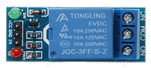

Collegamento del Relè al Raspberry
Partendo dal Relè:

Si prega di collegare nel seguente modo i Pin:
-Ai Pin Vcc e Gng collegare rispettivamente l'alimentazione positiva e la massa
-Pin In su GPIO15
Nelle porte NO e COM vanno collegati i 2 fili del Telecomando per far scattare la fotocamera.